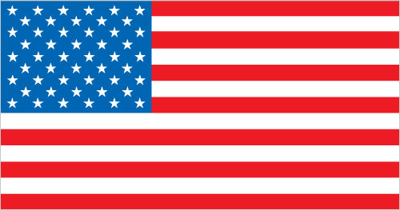
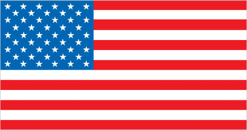

AI Product Manager & Business Strategist
Bridging technical and business domains with a unique background in engineering, fintech, and AI innovation.
Global Footprint
Countries I've lived in, worked in, or visited during my professional journey.


 

My international experience has shaped my perspective on sustainable development and cross-cultural collaboration.
Professional Journey
From engineering foundations to data-driven innovation
Who I Am
I bridge technical and business domains with a unique background spanning engineering, fintech, and AI innovation. My journey has equipped me with:
- Analytical thinking honed through my engineering background and MBA from Brandeis International Business School
- Global perspective from experiences across Africa, the US, Israel, and India
- Entrepreneurial drive demonstrated through founding Buffr to improve financial inclusion
- Leadership experience managing infrastructure projects and business operations
Interests & Focus
- Generative AI Applications
- Task Automation
- Fintech Innovation
- Business Strategy
Startup Accelerator Programs
Brandeis Spark
Participated in the Brandeis Spark Startup Cohort, receiving guidance and support to develop and launch my startup within the Brandeis University ecosystem.
Learn MoreMassChallenge
As part of the MassChallenge Early Stage Foundations Cohort, accessed mentorship, resources, and a network to refine entrepreneurial skills and grow ventures.
Learn MoreGlobal Venture Labs
Participated in the Global Venture Labs Accelerator Cohort, gaining valuable insights into entrepreneurship, business strategy, and scaling startups.
Learn MoreProfessional Characteristics
Strategic Focus
Highly driven and goal-oriented, with a strong ability to identify and pursue desired outcomes through dedicated effort and strategic planning. Excels at setting the stage for success by aligning resources and actions towards a clear vision.
Predictive Insight
Possesses a keen intuition and analytical mindset, enabling the ability to anticipate future trends and outcomes by recognizing patterns and connections. Adept at considering multiple perspectives and scenarios simultaneously to inform decision-making.
Immersive Learning
Deeply passionate about acquiring knowledge and skills, often diving headfirst into new subjects with intense focus and dedication. Balances periods of intense learning with moments of reflection and recharge to maintain a healthy equilibrium.
Resilience
Demonstrates remarkable courage and tenacity in the face of challenges, consistently rising to the occasion with a spirit of determination and adaptability. Embraces adversity as an opportunity for growth and transformation.
Empathetic Leadership
Draws upon a deep well of compassion and understanding to foster meaningful connections and inspire others towards a shared vision of positive change. Leads with authenticity, vulnerability, and a genuine desire to uplift and empower those around them.
Innovative Problem-Solving
Combines a vivid imagination with a practical approach to tackling complex challenges, consistently seeking novel and unconventional solutions. Unafraid to question the status quo and explore uncharted territories in the pursuit of breakthrough ideas and transformative outcomes.